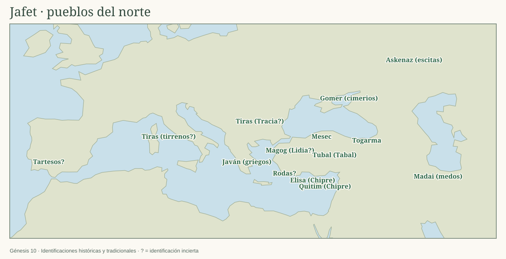
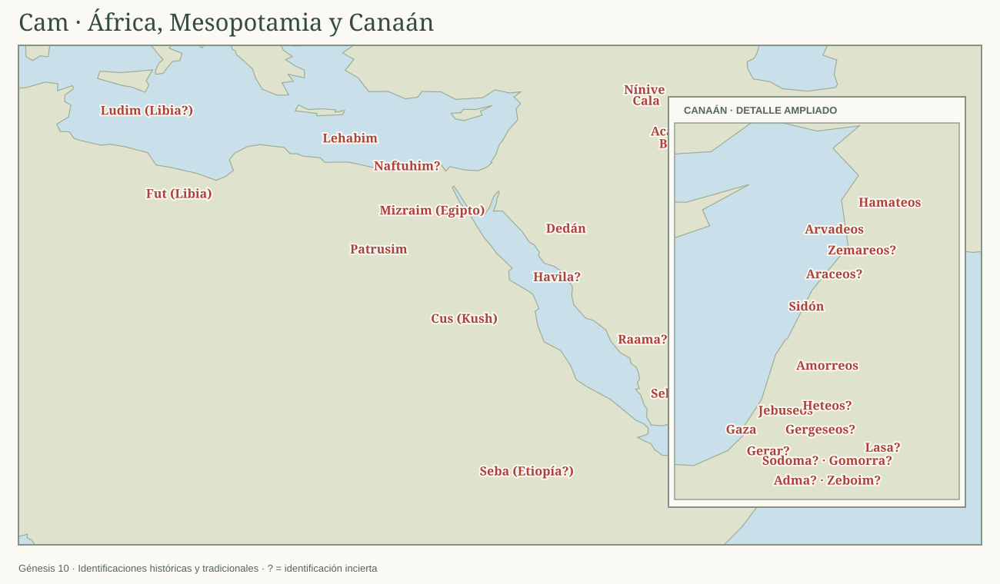
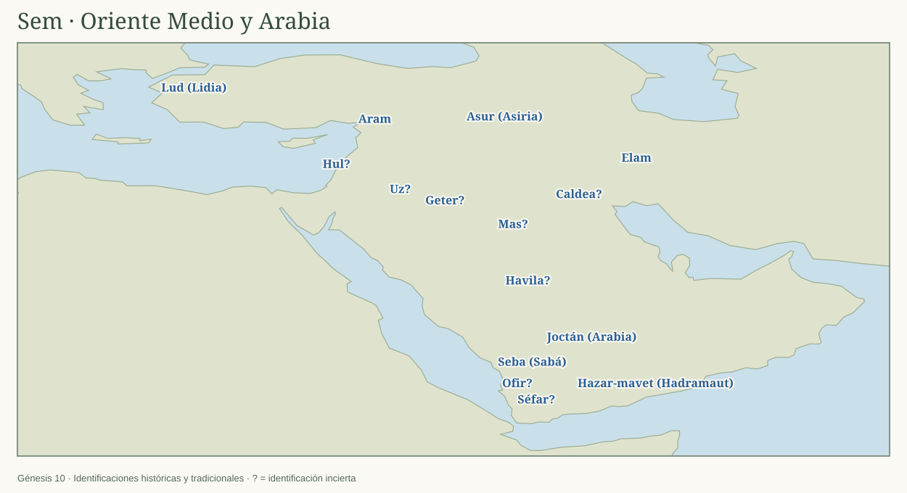

10:1 Estas son las generaciones de los hijos de Noé68: Sem, Cam y Jafet, a quienes nacieron hijos después del diluvio.
10:2 Los hijos de Jafet: Gomer, Magog, Madai, Javán, Tubal, Mesec y Tiras.
10:3 Los hijos de Gomer: Askenaz, Rifat y Togarma.
10:4 Los hijos de Javán: Elisa, Tarsis, Quitim y Dodanim69.
10:5 De estos se poblaron las costas, cada cual según su lengua, conforme a sus familias en sus naciones70.

10:6 Los hijos de Cam: Cus, Mizraim, Fut y Canaán.
10:7 Y los hijos de Cus: Seba, Havila, Sabta, Raama y Sabteca. Y los hijos de Raama: Seba y Dedán.
10:8 Y Cus engendró a Nimrod, quien llegó a ser el primer poderoso en la tierra.
10:9 Este fue vigoroso cazador delante de Jehová; por lo cual se dice: Así como Nimrod, vigoroso cazador delante de Jehová.
10:10 Y fue el comienzo de su reino Babel, Erec, Acad y Calne, en la tierra de Sinar.
10:11 De esta tierra salió para Asiria71, y edificó Nínive, Rehobot, Cala,
10:12 y Resén entre Nínive y Cala, la cual es ciudad grande.
10:13 Mizraim engendró a Ludim, a Anamim, a Lehabim, a Naftuhim,
10:14 a Patrusim, a Casluhim, de donde salieron los filisteos, y a Caftorim72.
10:15 Y Canaán engendró a Sidón su primogénito, a Het,
10:16 al jebuseo, al amorreo, al gergeseo,
10:17 al heveo, al araceo, al sineo,
10:18 al arvadeo, al zemareo y al hamateo; y después se dispersaron las familias de los cananeos73.
10:19 Y fue el territorio de los cananeos desde Sidón, en dirección a Gerar, hasta Gaza; y en dirección de Sodoma, Gomorra, Adma y Zeboim, hasta Lasa.
10:20 Estos son los hijos de Cam por sus familias, por sus lenguas, en sus tierras, en sus naciones.

10:21 También le nacieron hijos a Sem, padre de todos los hijos de Heber, y hermano mayor de Jafet74.
10:22 Los hijos de Sem fueron Elam, Asur, Arfaxad, Lud y Aram.
10:23 Y los hijos de Aram: Uz, Hul, Geter y Mas.
10:24 Arfaxad engendró a Sala, y Sala engendró a Heber.
10:25 Y a Heber nacieron dos hijos: el nombre del uno fue Peleg, porque en sus días fue repartida la tierra75; y el nombre de su hermano, Joctán.
10:26 Y Joctán engendró a Almodad, Selef, Hazar-mavet, Jera,
10:29 Ofir, Havila y Jobab; todos estos fueron hijos de Joctán.
10:30 Y la tierra en que habitaron fue desde Mesa en dirección de Sefar, hasta la región montañosa del oriente.
10:31 Estos fueron los hijos de Sem por sus familias76, por sus lenguas, en sus tierras, en sus naciones.
10:32 Estas son las familias de los hijos de Noé por sus descendencias, en sus naciones; y de estos se esparcieron las naciones en la tierra después del diluvio.
